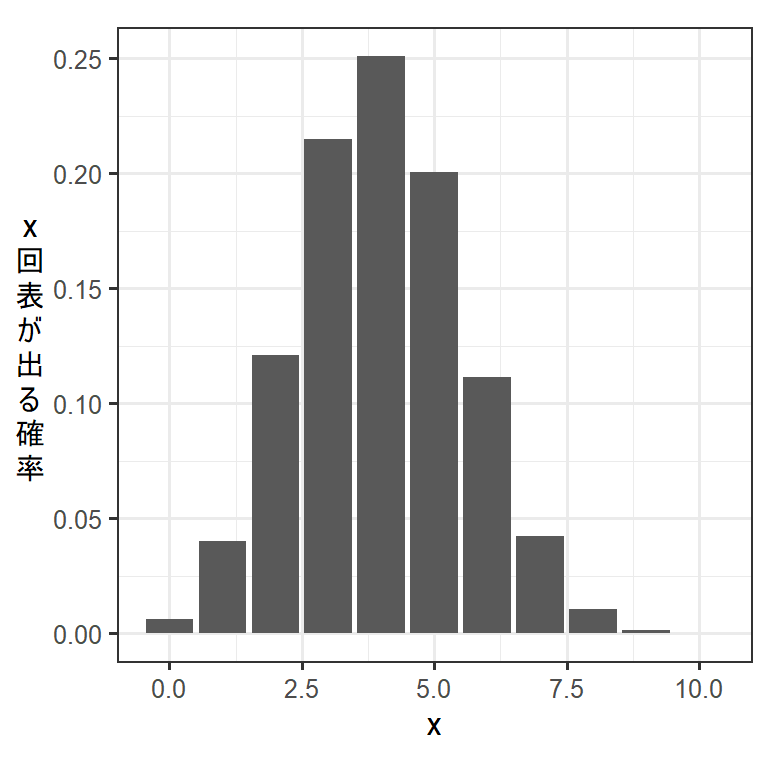

1 一般化線形モデル(GLM)における過分散
1.1 二項分布とポワソン分布の特徴
GLMでは、応答変数が二項分布やポワソン分布に従うと仮定してモデリングを行うことが多い。まずは、過分散について理解するためにこれらの分布の基本的な情報について確認する。
1.1.1 二項分布
二項分布は、「結果が2通り(例えば、成功/失敗)である試行（ベルヌーイ試行と呼ばれる）を独立に\(n\)回行ったときの成功回数の分布を表した確率分布」である。例えば、 コインを10回振ったときに表が出る回数は二項分布に従う。
一方の結果が生じる確率を\(p\)とするとき、\(n\)回中\(x\)回その結果が生じる確率\(P(x|n,p)\)は以下のように書ける(例. コインの表が出る確率が\(p\)のとき、\(n\)回中\(x\)回表が出る確率)。
\[ P(x|n,p) = _n C _x p^x(1-p)^{n-x} \quad (x \geq 0) \]
実際に表が出る確率が0.4のコインを10回ふったときの確率分布は以下のようになる。
## xは0から10までとりうる
x <- seq(0,10,by=1)
## それぞれのxの値を取りうる確率
p_x <- dbinom(x, size = 10, prob = 0.4)
## 作図
data.frame(x = x,
p_x = p_x) %>%
ggplot(aes(x = x, y = p_x))+
geom_col()+
theme_bw(base_size = 12)+
theme(aspect.ratio = 1,
axis.title.y = element_text(angle=0,
vjust = 0.5))+
labs(y = "x\n回\n表\nが\n出\nる\n確\n率")
先ほどの式からわかるように、二項分布の形は\(p\)と\(n\)にという二つの値によって決まる。このように確率分布を特徴づける値のことを母数(パラメータ)という。GLMなどのモデリングでは、分布を決めるために必要なパラメータを実際のデータから推定することが目的になる。例えば、応答変数が二項分布に従うモデルを考える場合、試行数\(n\)は既知なので、データが得られる確率が最も高くなるように\(p\)を推定することがゴールとなる。
さて、二項分布の平均と分散は\(p\)と\(n\)によって以下のように定まる。ここで重要なのは、二項分布は\(n\)と\(p\)が定まれば平均も分散も決まってしまうということである。
- 平均: \(np\)
- 分散: \(np(1-p)\)
1.1.2 ポワソン分布
ポワソン分布は、「ある一定の時間にある事象が発生する回数(\(x\))を表す確率分布」である。たとえば、1年間に自動車事故が発生する回数はポワソン分布に従うとされます。二項分布と違い、ポワソン分布は回数に上限がないことに注意が必要(事故は何回でも起こりうる)。
ある事象が一定期間に起きる平均回数を\(\lambda\)とするとき、その事象が\(x\)回生じる確率(\(P(x)\))は以下のようになる(覚える必要はないです)。
\[ P(x) = \frac{\lambda^x}{x!}e^{-\lambda} \quad (x \geq 0) \]
このように、ポワソン分布はたったひとつのパラメータ\(\lambda\)によって形が決まる。ポワソン分布の平均と分散はいずれも\(\lambda\)となる。
\(\lambda = 5.6\)の時のポワソン分布は以下のようになる。
## xは0から10までとりうる
x <- seq(0,15,by=1)
## それぞれのxの値を取りうる確率
p_x <- dpois(x, 5.6)
## 作図
data.frame(x = x,
p_x = p_x) %>%
ggplot(aes(x = x, y = p_x))+
geom_col()+
theme_bw(base_size = 12)+
theme(aspect.ratio = 1,
axis.title.y = element_text(angle=0,
vjust = 0.5))+
labs(y = "x\n回\n事\n象\nが\n生\nじ\nる\n確\n率")1.2 過分散とは
以上で見たように、二項分布とポワソン分布では、いずれも分布の平均を決めるパラメータ(二項分布: \(n\)と\(p\)、ポワソン分布: \(\lambda\))が決まれば分散も決まってしまう。
しかし実際にモデリングを行うとき、推定されたパラメータから期待されるよりも実際のデータの分散が大きくなってしまうことがよく生じる。このような現象を過分散という。
1.2.1 過分散の例
例えば、ニホンザルにある餌を10回提示したときに食べる回数を調べたとしよう。50個体分のデータを収集した結果、以下のデータが得られたとする(dat_binomというデータ)。なお、nは餌を提示した回数、xはサルが餌を食べた回数を示す。
シミュレーションによって架空のデータを作成する。
## 架空データの作成
set.seed(123)
N <- 50
n <- 10
age <- rpois(N, lambda = 7)
## 平均して確率0.3で餌を食べるとするときの回数x。
r <- rnorm(N, 0, 2.5)
x <- rep(0,N)
p <- rep(0,N)
for(i in 1:50){
p[i] <- inv_logit_scaled(-0.75 + 0.17*age[i]+ r[i])
x[i] <- rbinom(1,n,p[i])
}
dat_binom <- data.frame(x = x,
n = n)生成されたデータがこちら。
dat_binom %>%
datatable()サルが餌を食べる確率\(p\)がどれくらいになるか調べるために、サルが餌を食べた回数が二項分布に従うと仮定してGLMによる分析を行うとする。なお、リンク関数はロジット関数とする。
数式で書くと以下のようになる。GLMでは、パラメータ\(\beta\)を推定することになる。
\[ \begin{aligned} logit(p_i) &= log(\frac{p_i}{1-p_i}) = \beta\\ x_i &\sim Binomial(n_i, p_i) \end{aligned} \]
RでGLMを実行するコードは以下のようになる。
r_binom_sample <- glm(data = dat_binom,
cbind(x, n-x) ~ 1,
family = "binomial")結果は以下のようになる。推定されたパラメータ\(\beta\)は0.298である。
r_binom_sample##
## Call: glm(formula = cbind(x, n - x) ~ 1, family = "binomial", data = dat_binom)
##
## Coefficients:
## (Intercept)
## 0.2982
##
## Degrees of Freedom: 49 Total (i.e. Null); 49 Residual
## Null Deviance: 313
## Residual Deviance: 313 AIC: 397.7このとき、分析結果から推定される\(p\)は、\(log(\frac{p}{1-p}) = e^{0.2982..}\) より(リンク関数はロジット関数なので)、\(p =\) 0.574…となる。
これは実際のデータにおいてサルが餌を食べた平均割合ともほぼ一致する。
mean(dat_binom$x/dat_binom$n)## [1] 0.574もしデータが二項分布に従うならば、その分散は\(np(1-p) = 10\times0.574\times0.426 = 2.445..\)となるはずだと期待される。しかし、実際のデータの分散はそれよりも大きくなっている。
sd(dat_binom$x)## [1] 3.498163GLM(M)において、過分散が生じているかはdispersion parameter (\(\phi\))が既定の値(ポワソン分布や二項分布では1)よりも大きいかで調べられる。
dispersion parameter (\(\phi\))は以下の式で算出される。
なお、\(y_i\)は応答変数の値、\(\mu_i\)はモデルから推定されたi番目の期待値(平均値)、\(\sigma_i\)はモデルから推定されたi番目の分散を表す。また、残差自由度は全自由度(データ数)からモデルで推定されたパラメータ数(今回は\(\lambda\)の1つ)を引いたものである(つまり、今回は199)。
\[ \begin{aligned} \phi &= \frac{ピアソン残差^2}{残差自由度}\\ &= \frac{y_i-\mu_i/ \sigma_i}{残差自由度} \end{aligned} \]
Rでは以下のように求められる。
値が1を大きく超えており、過分散が生じていることが分かる。
sum(residuals(r_binom_sample,type = "pearson")^2)/r_binom_sample$df.residual## [1] 5.004475また、過分散が生じているかは、推定したパラメータを持つ分布からデータをシミュレートし、それを実際のデータと比較することで検定することもできる。詳しい方法については、このサイトを参照。
検定の結果、有意な過分散が検出された。
testDispersion(r_binom_sample)##
## DHARMa nonparametric dispersion test via sd of residuals fitted vs.
## simulated
##
## data: simulationOutput
## dispersion = 5.0808, p-value < 2.2e-16
## alternative hypothesis: two.sidedこのようなとき、このモデルには過分散が生じているという。
1.2.2 過分散の問題点
過分散が生じているということは、推定値のばらつきが過小評価されており、データがモデルにうまく適合していないことを示す(Fox & Sosa, 2015; Harrison et al., 2018)。
これによって生じる大きな問題は、統計検定において第一種の過誤(帰無仮説が正しいにもかかわらず誤って棄却してしまうこと)が生じる確率が高まってしまうということである(Fox & Sosa, 2015; Harrison et al., 2018)
1.2.3 過分散が生じる要因とゼロ過剰
過分散が生じる要因としては、空間的・時間的相関があることでデータに偏りが生じること、データが独立でないこと(cf. 疑似反復)、データ間のばらつきが大きいことなどがある。こうした要因によって過分散が生じている際の一般的な解決策としては、疑似尤度を用いる、ランダム効果を用いるなどの方法がある(粕谷, 2012)。
本稿で着目するのは、これら以外の要因、すなわちモデルから想定されるよりもゼロが多くなってしまう場合(ゼロ過剰)についてである。以下ではゼロ過剰が生じているデータについて見たうえで、その対処法についてまとめる。こうしたデータに対しては、ゼロ過剰モデルを用いることで対処することができる。